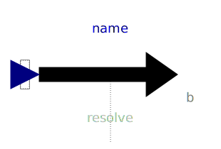
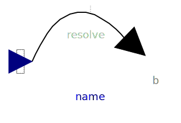
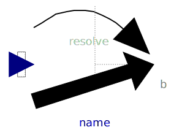
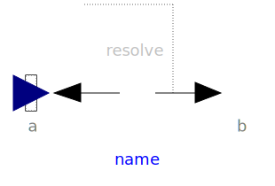
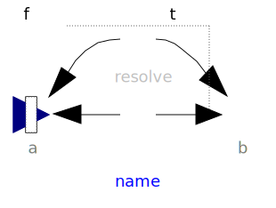
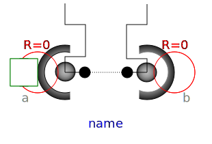
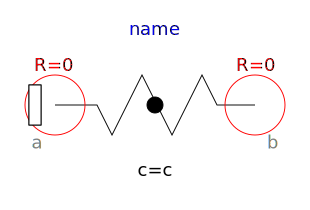
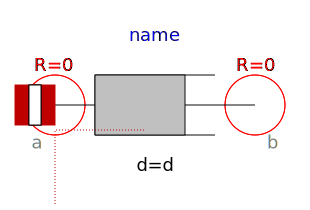
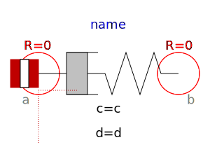

This package contains components that exert forces and torques
between two frame connectors, e.g., between two parts.
| Model |
Description |
| WorldForce |
External force acting at the frame to which this component is
connected and defined by 3 input signals, that are interpreted as
one vector resolved in frame world, frame_b or frame_resolve.

|
| WorldTorque |
External torque acting at the frame to which this component is
connected and defined by 3 input signals, that are interpreted as
one vector resolved in frame world, frame_b or frame_resolve.

|
|
WorldForceAndTorque |
External force and external torque acting at the frame to which
this component is connected and defined by 3+3 input signals, that
are interpreted as a force and as a torque vector resolved in frame
world, frame_b or frame_resolve.
|
| Force |
Force acting between two frames defined by 3 input signals
resolved in frame world, frame_a, frame_b or in
frame_resolve.

|
| Torque |
Torque acting between two frames defined by 3 input signals
resolved in frame world, frame_a, frame_b or in
frame_resolve.

|
| ForceAndTorque |
Force and torque acting between two frames defined by 3+3 input
signals resolved in frame world, frame_a, frame_b or in
frame_resolve.
|
| LineForceWithMass |
General line force component with an optional point mass on the
connection line. The force law can be defined by a component of
Modelica.Mechanics.Translational

|
|
LineForceWithTwoMasses |
General line force component with two optional point masses on
the connection line. The force law can be defined by a component of
Modelica.Mechanics.Translational

|
| Spring |
Linear translational spring with optional mass

|
| Damper |
Linear (velocity dependent) damper

|
|
SpringDamperParallel |
Linear spring and damper in parallel connection |
|
SpringDamperSeries |
Linear spring and damper in series connection |
| Name |
Description |
|  WorldForce |
External force acting at frame_b, defined by 3 input signals
and resolved in frame world, frame_b or frame_resolve |
|  WorldTorque |
External torque acting at frame_b, defined by 3 input signals
and resolved in frame world, frame_b or frame_resolve |
|  WorldForceAndTorque |
External force and torque acting at frame_b, defined by 3+3
input signals and resolved in frame world, frame_b or in
frame_resolve |
|  Force |
Force acting between two frames, defined by 3 input signals and
resolved in frame world, frame_a, frame_b or frame_resolve |
 Torque Torque |
Torque acting between two frames, defined by 3 input signals
and resolved in frame world, frame_a, frame_b or frame_resolve |
|  ForceAndTorque |
Force and torque acting between two frames, defined by 3+3
input signals and resolved in frame world, frame_a, frame_b or
frame_resolve |
 LineForceWithMass LineForceWithMass |
General line force component with an optional point mass on the
connection line |
|  LineForceWithTwoMasses |
General line force component with two optional point masses on
the connection line |
|  Spring |
Linear translational spring with optional mass |
|  Damper |
Linear (velocity dependent) damper |
 SpringDamperParallel SpringDamperParallel |
Linear spring and linear damper in parallel |
|  SpringDamperSeries |
Linear spring and linear damper in series connection |
 Internal Internal |
Internal package, should not be used by user |